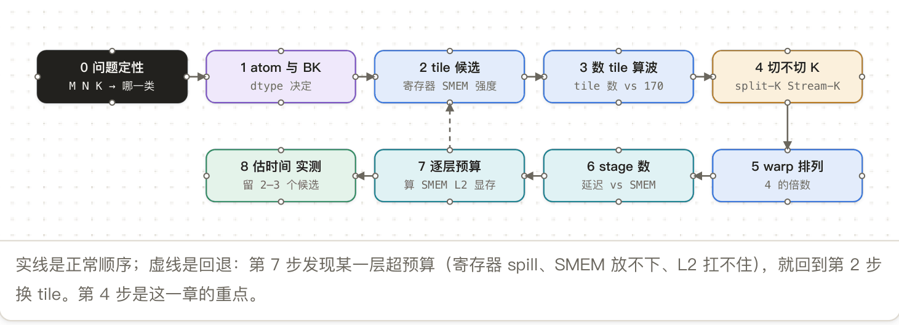
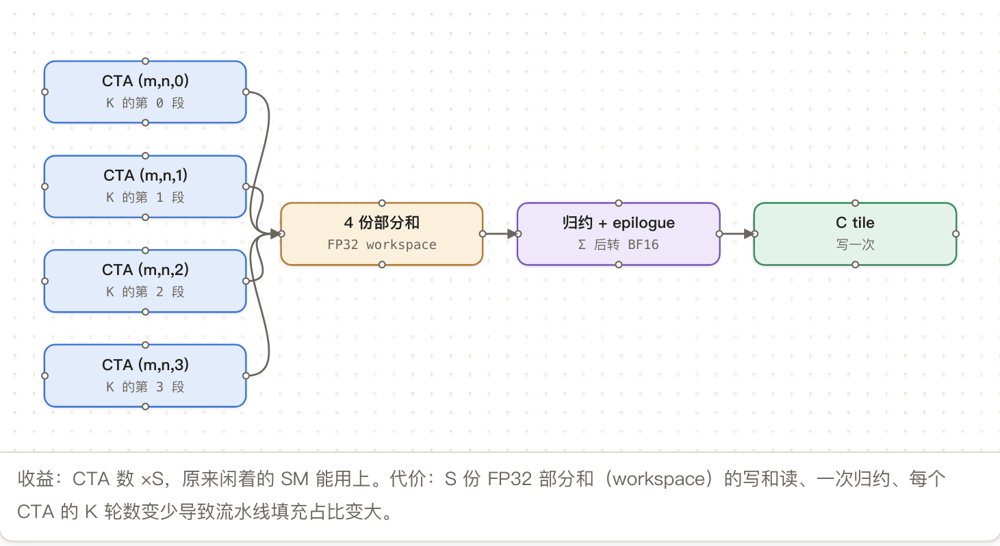
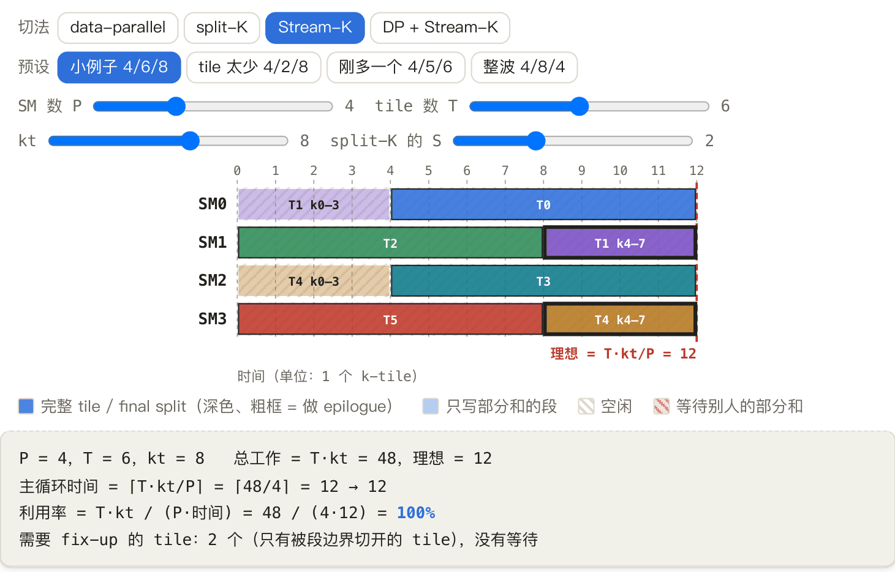

配置决策：一步一步定下一个 GEMM 配置（含 split-K / Stream-K）
这一章把“怎样定一个 GEMM 配置”拆成 9 步（第 0–8 步），每一步给出要回答的问题、算式、5090 上的数字和常见的坑。重点讲第 4 步“要不要切 K”：split-K 和 Stream-K 是什么、三种归约方式、怎样选 S、什么时候切 K 反而更慢。全章用 6 个形状贯穿：大方阵、中等方阵、tile 少而 K长、小 GEMM、LLM decode 的瘦长矩阵、K 很短。所有估算都来自playground/sizing_5090.py ，可以换成自己的形状重跑。
决策流程总图

贯穿全章的 6 个形状（BF16 输入、FP32 累加、BF16 输出，A 和 B 都是 K 连续）：
| 代号 | M × N × K | 特点 | 理想计算时间 | 显存下限 |
|---|---|---|---|---|
| P1 大方阵 | 8192 × 8192 × 8192 | tile 多，compute-bound | 5242 µs | 225 µs |
| P2 中等方阵 | 4096 × 4096 × 4096 | tile 数不是 170 的整数倍 | 655 µs | 56 µs |
| P3 tile 少、K 长 | 1024 × 1024 × 16384 | 只有 64 个 128×128 tile | 164 µs | 39 µs |
| P4 小 GEMM | 1024 × 256 × 1024 | 计算只有 2.6 µs | 2.6 µs | 1.8 µs |
| P5 decode | 16 × 4096 × 4096 | M 极小，memory-bound | 2.6 µs | 18.9 µs |
| P6 K 很短 | 8192 × 8192 × 256 | 输出巨大，epilogue 重 | 164 µs | 80 µs |
“理想计算时间” = 2MNK ÷ 209.5 TFLOP/s；“显存下限” = (A + B + C 各一遍) ÷ 1792 GB/s。两者取大的，就是这个问题在 5090 上的物理下限。
第 0 步：先给问题定性
先算三个数，判断它属于哪一类。后面每一步的取舍都取决于这个分类。
强度 I = 2MNK / ((MK + NK + MN)·2 B) vs 机器平衡 117 FLOP/B
tile 数 T = ceil(M/128)·ceil(N/128) vs 170 个 SM
k-tile 数 kt = ceil(K/64) 每个 tile 要沿 K 走几轮
| 类别 | 判据 | 例子 | 主要矛盾 | 主要手段 |
|---|---|---|---|---|
| A 大而方 | I ≫ 117，T ≥4×170 | P1 | Tensor Core 利用率、L2 复用 | 大 tile（128×128），data-parallel |
| B 波量化明显 | T 在 170 的 1–6 倍之间 | P2 | 最后一波不满 | Stream-K，或换 tile 让 T 接近 170 的整数倍 |
| C tile 少、K 长 | T < 170，kt 很大 | P3 | SM 用不满 | split-K / Stream-K |
| D 小 | 总计算 ≲ 启动开销 | P4 | 启动、填充、SM 用不满 | 小 tile 或 Stream-K，CUDA Graph + PDL |
| E 瘦长（decode） | M 或 N ≤ 64，I ≪ 117 | P5 | 显存带宽 | 让足够多的 SM 同时读权重，tile 的 M 维贴着 M 取 |
| F K 很短 | kt ≤ 8 | P6 | epilogue 写 C、填充 | epilogue 和主循环重叠（ping-pong /persistent），不要切 K |
同样一个“128×128、3 级 stage”的配置：在 P1 上达到峰值的 96%，在 P3 上只有 38%，在 P5 上只有 5%。先判断问题的类别，再选配置；不要拿一个大方阵上调好的配置去套所有形状。
第 1 步：数据类型定 MMA atom 和 BK
| 输入类型 | MMA atom | 每 SM 每时钟（FP32 累加） | BK（让一行 = 128 B） |
|---|---|---|---|
| BF16 / FP16 | m16n8k16 |
512 FLOP | 64 |
| FP8（E4M3 / E5M2） | m16n8k32 （kind::f8f6f4 ） |
1024 FLOP | 128 |
| NVFP4 / MXFP4（block-scaled） | m16n8k64（kind::mxf4nvf4.block_scale ） |
4096 FLOP | 128（另有 scale factor） |
这一步定死两件事：tile 的三维必须是 atom 形状的整数倍；BK 让 SMEM 的一行正好是 128 B，能用 SWIZZLE_128B 和无冲突的 ldmatrix 。后文都按 BF16、BK = 64。
第 2 步：列出 tile 候选（寄存器、SMEM、强度）
| CTA tile | 累加器总数 | 4 warp 时每线程 | 8 warp 时每线程 | 每级 stage | 99 KB 最多几级 | tile 强度 BM·BN/(BM+BN) |
|---|---|---|---|---|---|---|
| 64×32 | 2048 | 16 | — | 12 KB | 8 | 21 |
| 64×64 | 4096 | 32 | 16 | 16 KB | 6 | 32 |
| 128×64 | 8192 | 64 | 32 | 24 KB | 4 | 43 |
| 128×128 | 16384 | 128 | 64 | 32 KB | 3 | 64 |
| 128×256 | 32768 | 256（超了） | 128 | 48 KB | 2 | 85 |
| 256×256 | 65536 | 整个寄存器堆 | — | 64 KB | 1 | 128 |
- 寄存器：每线程累加器 + 约 40 个其他寄存器 ≤ 255，且越少占用率越高。超过约 128 个累加器 / 线程就要警惕 spill。
- SMEM：至少要能放 2 级，否则没有流水线。5090 上 128×256 只能 2 级，256×256 只能 1 级——这就是为什么 5090 上 BF16 的甜点是 128×128，而 H100（227 KB）常用 128×256。
- 强度：tile 越大，每个搬进来的字节被用的次数越多。5090 的显存平衡是 117，单靠 tile 强度永远不够，剩下的复用靠 L2（让同时在跑的 CTA 读同一片 A / B）。
候选：BF16 在 5090 上一般从 {128×128, 128×64, 64×64} 里挑，小问题再加上 64×32；M 很小时用 16×N（第 0 步的 E 类）。
第 3 步：数 tile、算波
T = ceil(M/BM) · ceil(N/BN) tile 数（data-parallel 时 = CTA 数）
waves = ceil(T / (170 · 每SM驻留数))
eff = T / (waves · 170 · 每SM驻留数) 波效率
对一个 compute-bound 的 GEMM，主循环时间 ≈ 最忙那个 SM 要顺序跑的 CTA 数 × 每个 CTA 的 k-tile 数 × 每个 k-tile 的时钟。驻留数 > 1 时，几个 CTA 共享同一组 Tensor Core，总时间不变，所以只要看“每个 SM 摊到几个 CTA”。
| 问题 | tile | T | 最忙 SM 的工作 | 波效率 | 主循环（估） | 理想 |
|---|---|---|---|---|---|---|
| P1 | 128×128 | 4096 | 25 CTA × 128 k-tile | 96.4% | 5439 µs | 5242µs |
| P1 | 128×256（2 级） | 2048 | 13 CTA × 128 k-tile | 92.7% | 5656 µs | |
| P2 | 128×128 | 1024 | 7 CTA × 64 k-tile | 86.0% | 761 µs | 655 µs |
| P2 | 128×64 | 2048 | 13 CTA × 64 k-tile | 92.7% | 707 µs | |
| P2 | 128×256（2 级） | 512 | 4 CTA × 64 k-tile | 75.3% | 870 µs | |
| P3 | 128×128 | 64 | 1 CTA × 256 k-tile，只用 64 个 SM | 37.6% | 435 µs | 164 µs |
判断规则：
- T ≥ 约 4 × 170 且 eff ≥ 90%：data-parallel 就行（P1）。
- eff 明显低于 90%：先试换 tile 让 T 接近 170 的整数倍（P2 的 128×64），再考虑 Stream-K。
- T < 170：SM 都用不满，进入第 4 步（P3、P4）。
第 4 步：要不要切 K —— split-K 与 Stream-K
一种常见的理解是“split-K 是空间上分 tile、Stream-K 是时间上分 tile”。这个说法不准确：
- 按 (M, N) 在空间上分输出 tile，是普通的 data-parallel（DP）：一个 CTA 负责一块 C，K 循环由它一个人串行跑完。这就是 A1 题的模型。
- split-K 和 Stream-K 都在 DP 的基础上，把 K 循环拆给多个 CTA，让多个 CTA 合算同一块 C 的部分和，最后再加起来。两者都是用“沿 K 的并行”去补“(M, N) 方向 tile 不够多、或者波不满”的缺口。
- 真正的区别是切的粒度：split-K 以 tile 为中心（tile-centric）：每个 tile 都切成同样的 S 段，CTA 数 = T·S，然后照常一波一波地排。Stream-K 以工作量为中心（work-centric）：把所有 tile 的全部 k-tile 排成一条长队，只开“SM 数”个 persistent CTA，每个 CTA 领连续、等量的一段。段的边界可以落在 tile 中间。
所以准确的说法是：split-K 是“每个 tile 等分 K”，Stream-K 是“总工作量按 SM 等分”。两者都靠增加 K 方向的并行来提高 SM 利用率，代价都是部分和的写回和合并（fix-up / 归约）。
| 并行单位 | CTA 数 | 谁做 epilogue | 主要代价 | |
|---|---|---|---|---|
| data-parallel | 1 个完整 tile | T | 唯一的那个 CTA | 波量化：T 不是 SM 数整数倍时最后一波不满 |
| split-K（S 段） | 1 个 tile 的 1/S 段 K | T·S | 归约后（parallel：另一个 kernel；serial：最后一段） | 所有 tile 都要写 S 份部分和、做一次归约 |
| Stream-K | 连续的 ⌈T·kt /P⌉ 个 k-tile 单元 |
P（= SM 数，persistent） | 包含该 tile 最后一个 k-tile 的那个 CTA（final split） | 只有被段边界切开的 tile 要 fix-up，每个 CTA 至多 2 个 |
4.1 split-K 是什么
正常情况下一个 CTA 负责一块输出 tile，沿 K 从头走到尾。split-K 把 K 切成 S 段，同一块输出由 S 个 CTA 分别算一段 K 的部分和，最后把 S 份部分和加起来：
C_tile = Σ_{s=0}^{S-1} A[:, K_s] · B[K_s, :] K_s = 第 s 段 K
CTA 数 = T × S, 每个 CTA 的 k-tile 数 = ceil(kt / S)

4.2 三种归约方式
| 方式 | 怎么做 | 确定性 | 额外开销 | CUTLASS 里 |
|---|---|---|---|---|
| parallel | 每个 CTA 把部分和写进 workspace（S·M·N·4 B），另一个归约 kernel 读回、相加、做 epilogue | 确定 | workspace 写 + 读，一次额外 launch | 2.x：GemmUniversalMode::kGemmSplitKParallel |
| serial /turnstile | 同一 tile 的 S 个 CTA 按 K 段顺序轮流拿锁，读出前一个的结果、加上自己的、写回；最后一个做 epilogue | 确定 | 锁等待（后面的 CTA 可能空等）；workspace 只需 1 份 | 3.x：ReductionMode:: Deterministic |
| atomic | 各 CTA 直接对 workspace 做 FP32 原子加（red.global.add ），最后一个读回做 epilogue |
不确定（浮点加法顺序不同，舍入不同） | 原子操作的 L2 压力 | 3.x：ReductionMode:: Nondeterministic |
3.x 的分解方式和归约方式见 tile_scheduler_detail.hpp （DecompositionMode::{Heuristic, DataParallel, SplitK, StreamK} ），实现见 sm90_tile_scheduler_stream_k.hpp 。sm120 的 GEMM kernel 复用 sm90 的 tile scheduler。
4.3 收益和代价的算式
主循环（不切） = ceil(T / 170) · kt · t_k
主循环（切 S） = ceil(T·S / 170) · ceil(kt/S) · t_k t_k = 2·BM·BN·BK / 512 clk
workspace = S · M · N · 4 B （parallel；serial 约 1 份
归约流量 ≈ 2 · workspace 写一遍、读一遍
填充占比 ≈ 1500 clk / (ceil(kt/S) · t_k) 每个 CTA 开头等一次显存往返
三个代价都随 S 变大而变大，收益却是台阶状的：只有当 T·S 跨过 170 的下一个整数倍时，主循环才会下降。
4.4 怎样选 S
- 下限：S ≥ ceil(170 / T)，让 CTA 数至少盖满一波。
- 贴着 170 的整数倍：在候选 S 里，选 T·S 刚好 ≤ 170·w（w = 1, 2, …）、波效率最高的那个。
- 每段至少 4 个 k-tile：ceil(kt / S) ≥ 4（最好 ≥ 8），否则流水线填充和 epilogue 摊不开。
- workspace 放得进 L2：S·M·N·4 B ≲ 48 MB（96 MB L2 的一半），部分和的写读就基本在片上完成；超过就要按显存带宽算，往往得不偿失。
- 要确定性就用 parallel 或 serial；atomic 最快，但每次运行的结果可能差最后几位。
4.5 例子：P3（1024 × 1024 × 16384）
T = 64（128×128），kt = 256，t_k = 4096 clk。按上面的公式逐个 S 算（额外开销按最坏情况——部分和全部走显存——再加 1 µs 归约 launch；装进 L2 时会更小）：
| 方案 | CTA 数 | 最忙 SM 的工作 | 主循环 | 额外（归约） | 合计 | TFLOP/s | workspace |
|---|---|---|---|---|---|---|---|
| 不切 | 64 | 1 CTA × 256 k-tile | 435µs | 0 | 436µs | 79 | — |
| S = 2 | 128 | 1 × 128 | 218µs | 10 µs | 229µs | 150 | 8 MB |
| S = 3 | 192 | 2 × 86 | 292µs | 15 µs | 309µs | 111 | 12 MB |
| S = 4 | 256 | 2 × 64 | 218µs | 20 µs | 239µs | 144 | 16 MB |
| S = 5 | 320 | 2 × 52 | 177µs | 24 µs | 202µs | 170 | 20 MB |
| S = 8 | 512 | 4 × 32 | 218µs | 38 µs | 259µs | 133 | 32 MB |
| S = 13 | 832 | 5 × 20 | 170µs | 62 µs | 235µs | 146 | 52 MB |
| Stream-K | 170 | 97 个 k-tile 单元 | 165µs | ≈ 0 | 166µs | 208 | 每 SM ≤ 2 个部分 tile |
| 64×64 不切 | 256 | 2 × 256 | 218µs | 0 | 219µs | 157 | — |
| 逐行读：S = 2：128 个 CTA，一波，用了 75% 的 SM，时间直接减半。S = 3 反而更慢：192 个 CTA 超过了 170，22 个 CTA 要等第二批——最忙的 SM 顺序跑 2 个 CTA，每个 86 个 k-tile。跨过 170 一点点是最差的情况。S = 4 和 S = 2 一样快：256 个 CTA = 2 批，每批的 K 只有一半，总量不变；还多付了一倍的 workspace。S = 5 最好：320 = 1.88 波，第二批几乎是满的（波效率 94%）。S = 13：主循环接近理想，但 52 MB 的 workspace 让归约变贵，合计反而不如 S = 5。Stream-K 最接近理想（下一节）。换小 tile 也是一种“切法”：64×64 不切 K，也有 256 个 CTA，效果和 S = 2 / 4 一样；代价是 tile 强度从 64 降到 32，L2 流量翻倍（这个模型没算 L2 带宽，所以它看起来比实际好）。4.6 Stream-K：不按 tile 分，按“k-tile 单元”均分 split-K 的问题是“S 只能取整数，T·S 很难正好是 170 的倍数”。Stream-K 换了一个粒度：把全部工作看成 T × kt 个单元（一个单元 = 一个 tile 的一个 k-tile），恰好开 170 个 persistent CTA，每个 CTA 领连续的 ceil(T·kt / 170) 个单元。 |
P3：64 个 tile × 256 个 k-tile = 16384 个单元 ÷ 170 = 96.4 → 每个 CTA 最多 97 个单元
主循环 = 97 × 4096 clk = 165 µs（理想 164 µs）
- 一个 CTA 的单元可能跨越两个 tile 的边界：它在前一个 tile 的尾巴上算的是部分和，要交给负责这个 tile 收尾的 CTA 去合并（fix-up）。每个 CTA 至多涉及 2 个不完整的 tile，所以修补的量很小。
- 实际实现常用 data-parallel + Stream-K 混合：完整的波照常按 tile 分（没有修补开销），只把最后那一波不满的部分用 Stream-K 均分。CUTLASS 的
DecompositionMode::Heuristic会自己在 data-parallel、split-K、Stream-K 之间选。 - P2（4096³）上也一样：128×128 时 T = 1024，7 波效率只有 86%（761 µs）；Stream-K 把 65536 个单元均分，每 SM 386 个，657 µs，几乎是理想值 655 µs。
4.7 手算小例子：4 个 SM 上的 DP、split-K、Stream-K
先用一个能在草稿纸上画完的例子：P = 4 个 SM，T = 6 个 tile（T0..T5），每个 tile kt = 8 个 k-tile。总工作量是 6 × 8 = 48 个单元，理想时间是 48 / 4 = 12（单位：一个 k-tile 的时间）。
✎ 草稿纸：P = 4，T = 6，kt = 8
① data-parallel：tile t → SM t % 4，第 t // 4 波
SM0 |T0 k0..7|T4 k0..7| 第 1 波 4 个 tile，第 2 波只有 2 个
SM1 |T1 k0..7|T5 k0..7|
SM2 |T2 k0..7| 空闲 |
SM3 |T3 k0..7| 空闲 | 时间 = ceil(6/4)·8 = 16，利用率 48 / (4·16) = 75% ② split-K，S = 2：每个 tile 切成 a = k0..3、b = k4..7，共 12 个单元，每个 4 长
SM0 |T0a|T2a|T4a| 时间 = ceil(12/4)·4 = 12（另加一次归约）
SM1 |T0b|T2b|T4b| 6 个 tile 全部要写 2 份 FP32 部分和再相加
SM2 |T1a|T3a|T5a|
SM3 |T1b|T3b|T5b|
③ Stream-K：48 个单元排成 T0k0..T0k7, T1k0..T1k7, …，每个 CTA 领连续 12 个
CTA0 = [0,12) = T0 全部 + T1 k0..3 CTA1 = [12,24) = T1 k4..7 + T2 全部
CTA2 = [24,36) = T3 全部 + T4 k0..3 CTA3 = [36,48) = T4 k4..7 + T5 全部
CUTLASS 让每个 CTA 从自己区间的“后面”往前做（见下方源码）：
SM0 |T1 k0..3 ▸存部分和|T0 k0..7 | T1、T4 被切开，各需要 1 次 fix-up
SM1 |T2 k0..7 |T1 k4..7 ◂加部分和| T1 的最后一段（含 k7）在 SM1 的 t=8..12 SM2 |T4 k0..3 ▸存部分和|T3 k0..7 | 它要的部分和 SM0 在 t=4 就写好了 → 不用等 SM3 |T5 k0..7 |T4 k4..7 ◂加部分和| 时间 = 12，利用率 100%
④ DP + Stream-K 混合：前 4 个 tile 一整波用 DP（t=0..8），剩下 T4、T5 共 16 个单元给 4 个
CTA 各 4 个
SM0 |T0 k0..7|T4 k0..3| SM1 |T1 k0..7|T4 k4..7| SM2 |T2 k0..7|T5 k0..3| SM3 |T3 k0..7|T5 k4..7|
时间 = 8 + 4 = 12；只有尾巴上的 2 个 tile 需要 fix-up，前面一整波和 DP 完全一样（L2 局部性也
一样）
为什么 Stream-K 的 fix-up 几乎不用等：一个 CTA 的区间开头通常是某个 tile 的尾巴（含最后一个 k-tile，也就是 final split，要做 epilogue），区间结尾通常是另一个 tile 的开头（只需要写部分和）。CUTLASS 让 CTA 反着做：先算开头那块，写出部分和；最后才算 final split，再把别人的部分和加进来。这样负责收尾的 CTA 总是最晚到，它要等的数据早就写好了。源码注释原文见 sm90_tile_scheduler_stream_k.hpp · work backwards ；final split 的 CTA 等前面的 split 写完再
load_add 、做 epilogue，见 fixup() ；DP / SK tile 数怎样划分，见 tile_scheduler_params.h （dp_tiles = output_tiles - sk_tiles ）。原始论文：Osama et al., Stream-K: Work-centric Parallel Decomposition for Dense Matrix-Matrix Multiplication on the GPU，PPoPP 2023，arXiv:2301.03598。
下面的甘特图可以改 SM 数、tile 数、kt 和切法。每一行是一个 SM，每一格是一个 k-tile，颜色表示属于哪个 tile。粗框表示 final split（做 epilogue），浅色表示只写部分和，灰色斜线表示空闲或等待。悬停任意一段可以看它的区间是怎样算出来的。

动手试三件事：
- 小例子：DP 要 16，另外三种都是 12。split-K 要归约全部 6 个 tile，Stream-K 只 fix-up 2 个，混合方案也是 2 个，而且前一整波和 DP 完全一样。
- 整波 4/8/4：T 正好是 P 的整数倍。DP 已经是 100%，切 K 只会多付归约。混合方案会自动退化成纯 DP。
- tile 太少 4/2/8：DP 只用了一半的 SM。S = 2 的 split-K 就能补满，Stream-K 也一样。这正是 P3 的情形（T = 64≪ 170）。
4.8 什么时候切 K 反而更慢
| 问题 | 方案 | 合计 | 为什么 |
|---|---|---|---|
| P2 4096³ | 128×128 不切 | 766µs | 7 波，最后一波不满 |
| P2 4096³ | 128×128，S = 2 | 866µs | tile 本来就够多；workspace = 2 × 4096² × 4 B = 128 MB >L2，部分和要进出显存 |
| P2 4096³ | 128×128 Stream-K | 657µs | 只补最后一波，没有大 workspace |
| P6 8192²×256 | 128×128 不切 | 186µs | |
| P6 8192²×256 | 128×128，S = 2 | 797µs | 每个 CTA 只剩 2 个 k-tile；workspace 512 MB |
- tile 已经够多（T ≫ 170）：切 K 不会多用 SM，只会多付归约。2. 输出很大：workspace = S·M·N·4 B 超过 L2，就变成了一次额外的、整矩阵大小的显存读写。3. K 本来就短：kt / S < 4 时，每个 CTA 刚把流水线灌满就结束了。
第 5 步：定 warp 数和排列
规则：warp 数是 4 的倍数（每个 SMSP 至少一个）；每线程累加器 ≲ 128；warp tile 尽量接近方形，这样 ldmatrix 读进来的 fragment 能被更多条 mma 复用。
| CTA tile | warp | 排列 WM × WN | warp tile | 每 k16 每 warp 的 mma | 每线程累加器 |
|---|---|---|---|---|---|
| 64×32 | 4 | 2 × 2 | 32×16 | 4 | 16 |
| 64×64 | 4 | 2 × 2 | 32×32 | 8 | 32 |
| 128×64 | 4 | 2 × 2 | 64×32 | 16 | 64 |
| 128×128 | 8 | 2 × 4 | 64×32 | 16 | 64 |
| 128×128 | 4 | 2 × 2 | 64×64 | 32 | 128（偏紧） |
| 16×64（decode） | 4 | 1 × 4 | 16×16 | 2 | 8 |
warp tile 的复用：64×32 的 warp tile 每个 k16 读 A 64×16、B 32×16（共 3 KB），喂 16 条 mma；32×16 的 warp tile 读 1.5 KB 只喂 4 条。前者每条 mma 读 192 B，后者 384 B。5090 的 SMEM 平衡只有 4 FLOP/B，两种都喂得饱；但在 H100（平衡 32）上，小 warp tile 会变成 SMEM-bound。
第 6 步：定 stage 数
stage 的作用是提前发出后面 k-tile 的加载，让计算的时候数据已经在路上。需要提前几级，取决于一个 k-tile 算多久：
提前级数 ≈ ceil(访存延迟 / t_k) 访存延迟（L2 / 显存）≈ 1000–1500 clk
stage 数 = 提前级数 + 1 且 stage × 每级字节 ≤ 99 KB
| tile | t_k | 提前级数 | 建议 stage | SMEM |
|---|---|---|---|---|
| 128×128 | 4096 clk | 1 | 2–3 | 64–96 KB |
| 128×64 | 2048 clk | 1 | 3 | 72 KB |
| 64×64 | 1024 clk | 2 | 3–4 | 48–64 KB |
| 64×32 | 512 clk | 3 | 4 | 48 KB |
| 16×64（decode） | 256 clk | 6 | 4–7，按“在途字节”定（见下） | 40–70 KB |
memory-bound 的问题（P5）换一个判据：全芯片要有约 1.2 MB 在途（带宽 × 延迟），平均到正在读数据的 SM 上。P5 的 16×64 tile 有 64 个 CTA，每个 SM 要有约 19 KB 在途；每级 (16+64)·64·2 = 10 KB，提前 2–3 级就够。
第 7 步：占用率和逐层预算检查
先算每 SM 驻留几个 CTA（见 执行模型 的驻留公式），再对一个 k-tile 检查每一层的时间都 ≤ 计算时间。以 P1 的 128×128×64、8 warp、3 级为例：
| 层 | 一个 k-tile 的量 | 速率（每 SM） | 时间 | 和计算（4096 clk）比 |
|---|---|---|---|---|
| Tensor Core | 2·128·128·64 = 2.1 M FLOP | 512 FLOP/clk | 4096 clk | 基准 |
SMEM 读（ldmatrix ） |
8 warp × 4 k16 × 3 KB = 96 KB | 128 B/clk | 768 clk | 19%，不是瓶颈 |
SMEM 写（TMA /cp.async ） |
32 KB | 128 B/clk | 256 clk | 6% |
| 显存（若全部 miss L2） | 32 KB | 4.4 B/clk | 7447 clk | 182%：必须靠 L2 挡掉 ≥ 45% |
| 寄存器 | 64 累加器 + ~40 → ~104 / 线程 | ≤ 255 | 通过；8 warp × 32 × 104 ≈ 26.6K 个，每 SM 可放 2 个 CTA | |
| SMEM 容量 | 3 × 32 KB = 96 KB | ≤ 99 KB | 通过；每 SM 只能放 1 个 CTA |
任何一行超过 100%，就回到第 2 步换 tile 或第 6 步改 stage。显存那一行几乎总是超的，这就是 tile 光栅化顺序（让同时在跑的 CTA 读同一片 A / B）和 L2 那么重要的原因。
第 8 步：估时间、留候选、实测
把前面的数字合起来：
合计 ≈ max(主循环计算, 显存下限) + 填充（~1500 clk × 顺序跑的 CTA 数）+ 归约 / 修补 + epilogue（未
playground/sizing_5090.py 就是这个公式；它故意不建模 L2 带宽（5090 未公开）、epilogue 重叠和 bank conflict，所以只用来排除明显差的方案、留下 2–3 个候选，最后一定要上机测：
- Nsight Compute：
sm__pipe_tensor_cycles_active（Tensor Core 忙不忙）、lts__t_bytes（L2 流量）、dram__bytes（显存流量）、smsp__warp_issue_stalled_*（warp 在等什么）。 - 对比 cuBLAS（
cublasGemmEx）或 CUTLASS profiler 的同形状结果。
python3 playground/sizing_5090.py # 打印本章全部例子
python3 playground/sizing_5090.py 2048 512 8192 # 换成你的形状
两个特殊形状
P5 decode（16 × 4096 × 4096）：memory-bound，目标是“读满带宽”
| 方案 | CTA 数 | 合计 | 说明 |
|---|---|---|---|
| 128×128 | 32 | 109 µs | M = 16 被补到 128，7/8 的 MMA 在算零；而且只用 32 个 SM |
| 16×64 | 64 | 19.5 µs | 贴着 M 取 BM = 16（atom 的 M 正好是 16）；时间 ≈ 读一遍 32 MB 权重 |
| 16×32 | 128 | 19.5 µs | 同上；更多 SM 一起读，更容易凑够在途字节 |
| 16×64，S = 4 | 256 | 22.3µs | workspace 只有 1 MB，但已经到显存上限，切 K 只多了归约 |
结论：强度只有 16 FLOP/B，时间完全由“读一遍权重”决定（18.9 µs）。配置的目标从“喂饱 Tensor Core”变成“让足够多的 SM 同时发出足够多的加载”：BM 贴着 M，N 方向切细让 CTA 数 ≥ 128，stage 按在途字节定。只有当 N 也很小、CTA 数凑不够时，split-K 才用来多开 CTA（M 小，workspace 很便宜）。
P6 K 很短（8192 × 8192 × 256）：epilogue 是第二大成本
kt = 4，每个 tile 的主循环只有 4 × 4096 = 16384 clk；而它要写出 128×128×2 B = 32 KB 的 C，按每 SM 4.4 B/clk 的显存份额要约 7400 clk——epilogue 是主循环的 45%。C 一共 128 MB，单是写出就要 75 µs。
- 不要切 K（上一节：S = 2 时 797 µs）。
- 让 epilogue 和下一个 tile 的主循环重叠：ping-pong 调度（两个 consumer warp group 交替，一个在写 epilogue 时另一个在算，见 D3），或 persistent kernel 里把 epilogue 的 TMA store 异步化。重叠后合计接近 186 µs（主循环 + 填充），不重叠则约 250 µs。
- stage 数没必要多：每个 tile 只有 4 个 k-tile，2 级就够。
六个问题的结论
| 问题 | 类别 | 推荐 | 估算 | 物理下限 | 关键一步 |
|---|---|---|---|---|---|
| P1 8192³ | A 大而方 | 128×128×64，8 warp，3 级，data-parallel（或 Stream-K） | 5454 µs（Stream-K 5244） | 5242µs | 第 2 步：5090 SMEM 只够 128×128 |
| P2 4096³ | B 波量化 | Stream-K；或 128×64 data-parallel | 657 µs / 715µs | 655µs | 第 3 步：7 波效率 86% |
| P3 1024²×16384 | C tile 少 K 长 | Stream-K；或 split-K S = 5 | 166 µs / 202µs | 164µs | 第 4 步：S 要贴着 170 的整数倍 |
| P4 1024×256×1024 | D 小 | 64×64 Stream-K；或 64×32 data-parallel；graph + PDL | 3.6 µs / 4.0µs | 2.6µs | 第 0 步：先意识到启动开销最大（见端到端例子） |
| P5 16×4096×4096 | E decode | 16×32 或 16×64，4 warp 沿 N 排 | 19.5 µs | 18.9µs | 第 0 步：它是 memory-bound |
| P6 8192²×256 | F K 短 | 128×128，2 级，ping-pong / epilogue 重叠 | ~186 µs | 164µs | 第 4 步：千万别切 K |
- 定性：算 I、T、kt，判断是 A–F 哪一类。2. atom 与 BK：BF16 →
m16n8k16、BK = 64；FP8 / FP4 → BK = 128。3. tile 候选：5090 BF16 从 128×128 / 128×64 / 64×64 里挑；M 很小时 BM 贴着 M。4. 数 tile：T ≥ 4×170 且波效率 ≥ 90% → 不用切 K。5. 切 K：T < 170 时先算 S ≥ 170/T，再挑让 T·S 贴着 170 整数倍的 S；每段 ≥ 4 个 k-tile；workspace ≤ 48
MB；优先 Stream-K。
- warp：4 的倍数，每线程累加器 ≤ ~128，warp tile 尽量方。7. stage：提前级数 ≈ 延迟 / t_k；memory-bound 时按在途字节定。8. 逐层预算：一个 k-tile 里 SMEM、L2、显存的时间都要 ≤ 计算时间，超了就回第 2 步。9. 留 2–3 个候选上机测，看 Nsight Compute 的 tensor / L2 / DRAM 指标。